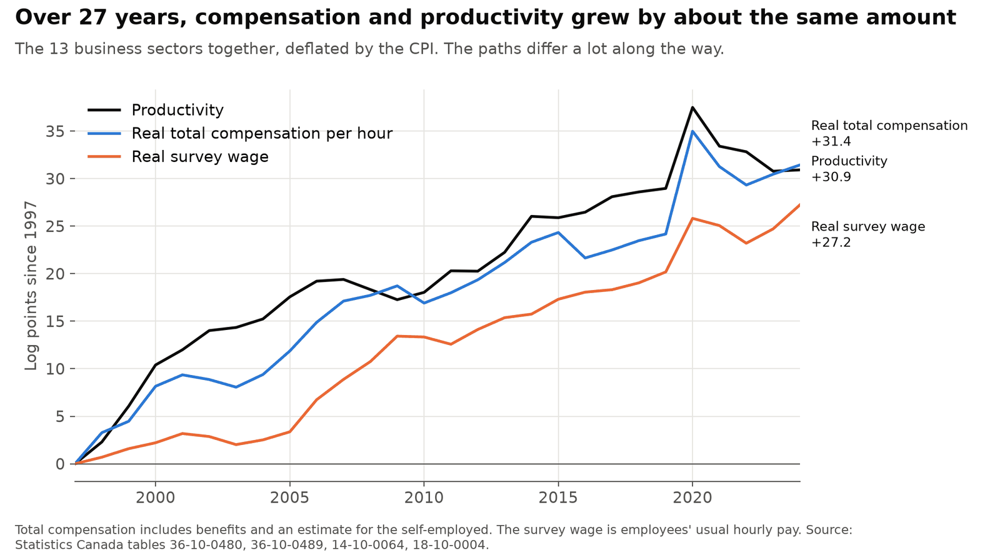
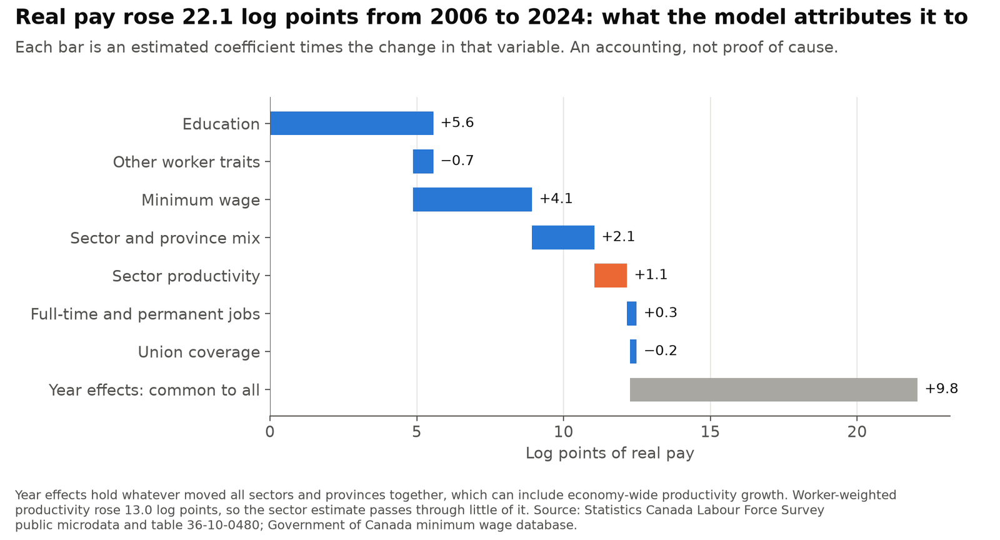
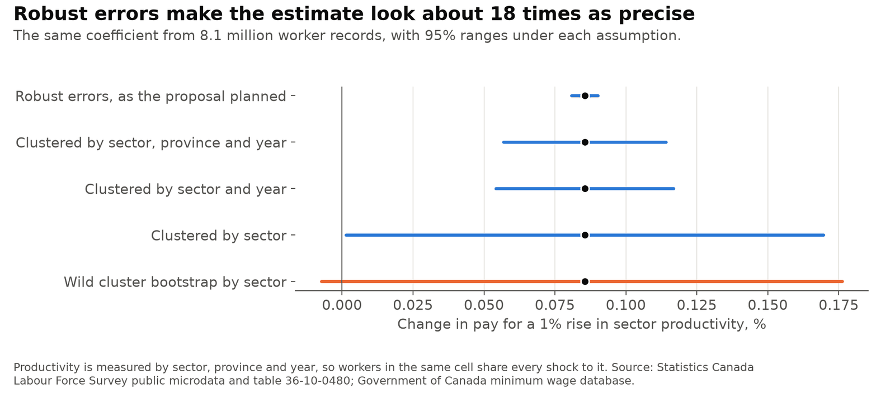
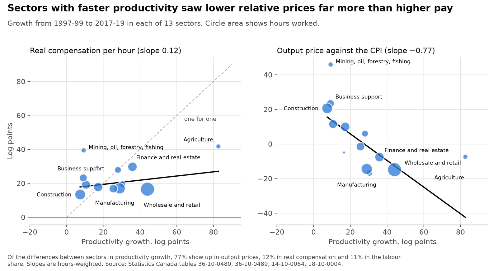
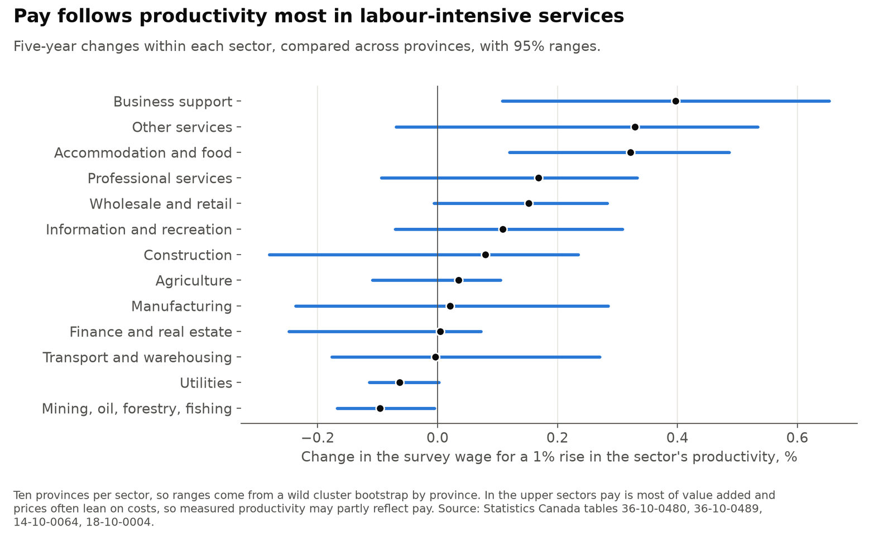

Productivity and pay by sector in Canada
How far does pay in Canada follow productivity, and why do sectors differ? This answers three questions from open data: Statistics Canada's productivity and labour tables for 1997 to 2024, and 8.1 million Labour Force Survey records for 2006 to 2024. It also changes parts of the design, including the standard errors, the deflators and the treatment of minimum wages. Results are as of November 2026.
Personal project: my own analysis of publicly available data. It is not associated with my work for any current or past employer and does not represent their views. These results describe how pay and productivity move together. They are not causal estimates.
At a glance
| Question | Methods | Answer |
|---|---|---|
| How much of wage gains come from productivity? | Growth accounting, panel with sector and province-year effects, wild cluster bootstrap | Across all 13 sectors, both rose about 31 log points from 1997 to 2024, though compensation was well behind until 2019. Within a sector and province, pay barely follows its own productivity: −0.01% for a 1% rise (−0.06 to 0.04). |
| Is productivity the main driver? | Worker regression, decomposition of the change in pay | Not one the data can isolate. Sector productivity accounts for 5% of the rise in pay since 2006, or about half if every trend common to all sectors is also credited to it. Education accounts for 25% and minimum wages for 18%. |
| Why do sectors differ? | Variance split, sector estimates, worker-mix adjustment | Differences in productivity growth mostly show up in relative prices (77%), with 12% in pay. Who works in a sector explains 52% of pay level differences but 17% of pay growth differences. |
A log point is about 1% for small changes; 31 log points is a rise of 36%. Ranges are 95%.
1. How much of wage gains come from productivity?

Across the 13 sectors, productivity rose 30.9 log points from 1997 to 2024, and real compensation per hour rose 31.4. The match depends on the end date: through 2019, compensation had risen 24.2 against 29.0 for productivity, and the gap closed only after 2019.
| Log points | 1997-2024 | 1997-2019 | 2019-2024 |
|---|---|---|---|
| Productivity | 30.9 | 29.0 | 1.9 |
| Real total compensation | 31.4 | 24.2 | 7.3 |
| Real survey wage | 27.2 | 20.2 | 7.1 |
Within a sector and province, compared with others in the same province and year, the picture is different. A 1% rise in productivity comes with −0.01% in the survey wage over five years (95% range −0.06 to 0.04), and 0.15% in national accounts compensation per hour (0.08 to 0.31), which shares its hours with productivity. Measured in the sector's own output prices, as Feldstein (2008) recommends, the figures are 0.41% and 0.56%.
2. Is productivity the main driver?
Real pay rose 22.1 log points from 2006 to 2024. A regression on worker records attributes 5% of that to sector productivity, 25% to education and 18% to minimum wages. Another 44% is common to all sectors and may include economy-wide productivity growth, so the range for productivity is 5% to about half. The design can't narrow it.

Productivity here is measured by sector, province and year, so every worker in a cell shares it. Robust errors alone would make the estimate look about 18 times as precise as clustering by sector does.

3. Why do sectors differ?
Sector productivity growth differs far more than pay growth. Of the variance in productivity growth across sectors, 77% lines up with relative output prices, 12% with real compensation and 11% with the labour share. This fits Baumol's (1967) account: workers can move between sectors, so pay grows at similar rates, and slower sectors' prices rise instead.

Holding worker characteristics fixed removes 52% of the variance in pay levels across sectors, but 17% of the variance in pay growth. Pass-through is highest in labour-intensive services, though measured productivity there may partly reflect pay.

What this can't show
Higher pay can raise measured productivity, common shocks can move both, and sector comparisons can't show how far economy-wide gains reach workers as a whole. Timing tests and instruments (the same sector in other provinces and in the US) find no sign of reverse causality, but their ranges are wide and they can't rule it out.
- Education, health and public administration are left out, because much of their output is measured from their spending on staff. They held 29% of employees in 2024.
- Output and hours for a sector and province are estimates, and provincial productivity is noisy, which pulls slopes toward zero.
- Provinces choose when to raise minimum wages, often when pay is rising, so the minimum wage share may not be the effect of the minimum alone. My minimum wage project studies this directly.
Data
Statistics Canada tables 36-10-0480, 36-10-0489, 14-10-0064, 14-10-0132 and 18-10-0004; Labour Force Survey public use microdata files, 2006 to 2024; general hourly minimum wage rates from the Government of Canada's minimum wage database; US real value added and employment by industry from the US Bureau of Economic Analysis.
Adapted from Statistics Canada; this does not constitute an endorsement by Statistics Canada of this product. Contains information licensed under the Open Government Licence - Canada.